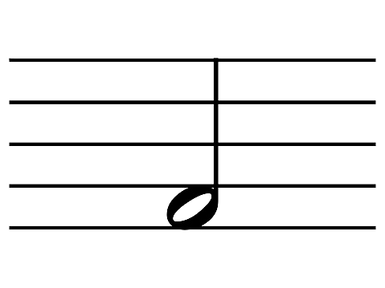

No historical evidence exists to tell us exactly who sang the first song, or whistled the first tune, or made the first rhythmic sounds that resembled what we know today as music.
On ancient stories and illustrations, gods can be seen playing instruments, causing scientists to believe that music has been around for thousands of years.
It is thought that the first for of music was singing.
By the middle ages there were various types of instruments and the Renaeciance set the foundation for the Baroque period.
We will go into depth with these periods later,
but basically classical music was everywhere and this led to Romantic and Opera, and by the 1960s, Jazz and Blues.
The next big hit was Rock Music but now, muscians rely on more technology than ever. It is quite unlikely to actually record music using different instruments
and they instead use all sorts of electronic tools to produce it.
This takes away the creativity aspect, but it is music nonetheless.
In music there are certain types of notes. The most basic ones are whole notes, half notes, quarter notes, eighth notes, and sixteenth notes
Whole notes are held for 4 beats. Imagine hitting something four times and each hit lasts for an equal amount of time. These notes are long and held because they last for so long
Half notes are held for 4 beats. There are two half notes in a whole note.Played faster than whole
Quarter notes are held for one beat. These are the most basic of notes, and the most important.
There are two quarter notes in one half note
and 4 of these in a whole note.
Notice how these are filled in while half notes and whole notes are not. Played faster than whole notes
Eighth notes are half of a quarter note (they are worth half a beat).There are 4 of these in a half note and and 8 of them in a whole note.
Notice how there is a flag on eigth notes. If your note was higher the flag would be on the bottom. Played faster than quarter notes
sixteenth notes are 1/4 of a quarter note (they are worth a quarter of a beat).
Notice how there are two flags on these notes. If your note was higher the flags would be on the bottom.Sizteenth notes are pleayed quite fast since they have a lower value.
Notes range from A - G. The pitch of these depend on where you play them though. For instance, on a violin (Treble CLef) G is the lowest note, but also can be played on the highest string of the instrument because this is the second octaves. One cycle of these notes is called an octave